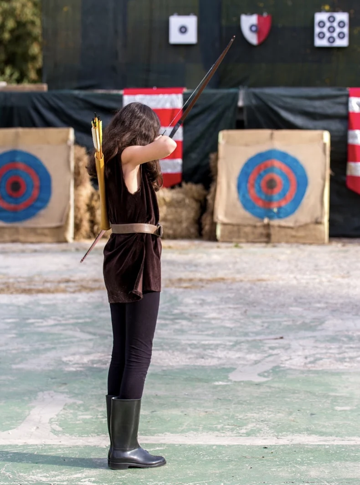
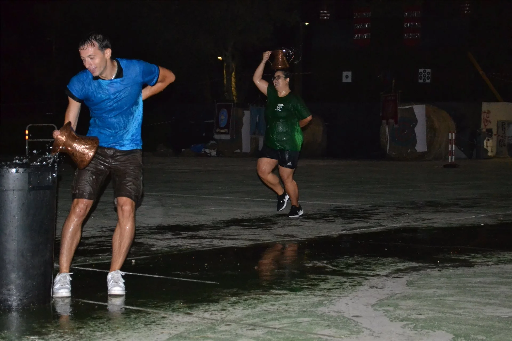
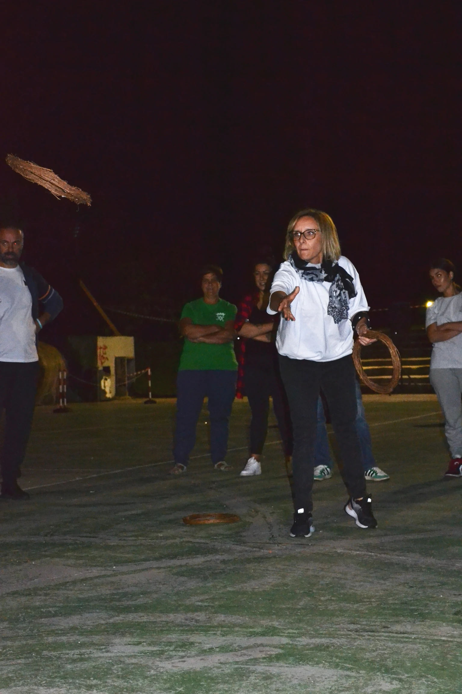
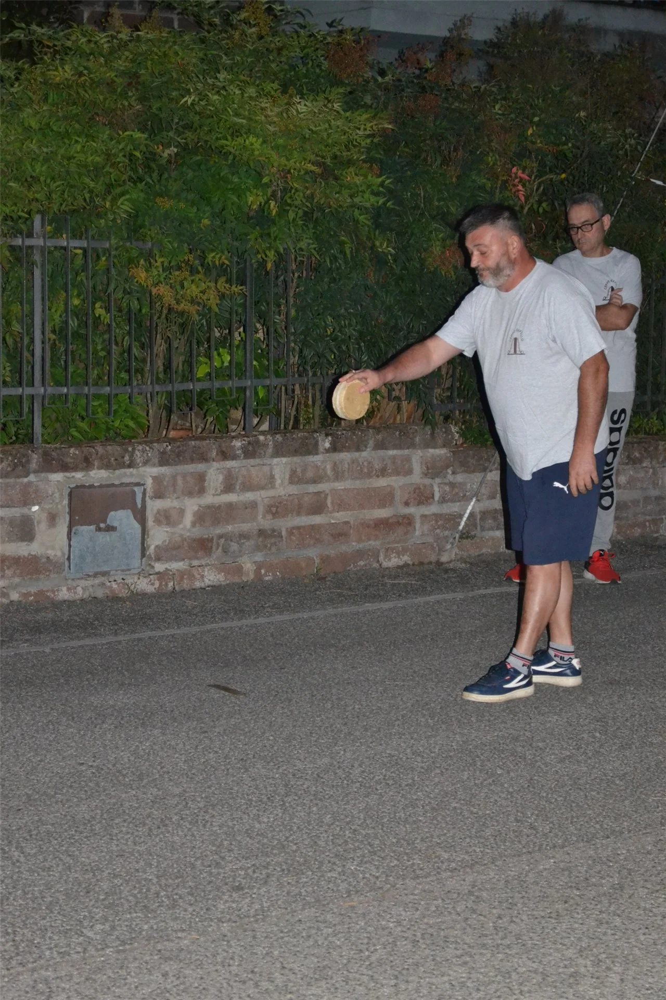
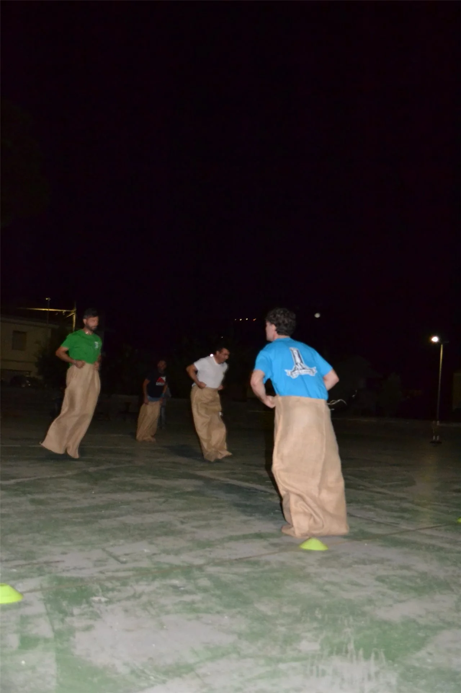

7 Contrade in Sfida
Il Palio della Pace
I giochi popolari, le armi storiche e il Drappo del Palio
Gare storiche
Arco e Balestra Antica
Le gare di tiro, disputate all'Anfiteatro Comunale, determinano la contrada vincitrice del Drappo.

Gli arcieri affrontano tre serie di tiri da tre frecce ciascuna. Competizione riservata all'uso di archi Longbow o storici, privi di mirini.

Disciplina della Balestra antica da Banco con fusto in legno e arco in acciaio, rigorosamente priva di ottiche.
I Giochi delle Contrade
I Giochi Popolari
Sei prove in cui forza, destrezza e spirito di squadra decidono il destino della contrada.

Prova di velocità ed equilibrio: trasportare la conca piena d'acqua in equilibrio sulla testa per 15 metri e versarla.

Gioco di pura forza e resistenza. 5 giocatori per Contrada per trascinare il segno centrale oltre la linea.

Sfida individuale di altissima precisione: centrare un paletto a 4 metri con 3 anelli regolamentari.

Gioco tradizionale. 2 giocatori si alternano nel lanciare un cerchio in legno cercando di coprire la maggior distanza.

Sfida individuale: completare un percorso di 20+20 metri indossando un sacco di iuta nel minor tempo possibile.
Foto in arrivo
Prima edizione assoluta!
Sfida di forza e strategia ispirata alla tradizione toscana. 5 atleti per Contrada, 2 tempi da 15 minuti effettivi.
I 7 Rioni di Cave
I Gonfaloni delle Contrade
Ogni contrada scende in campo fiera dei propri simboli, della propria storia e dei propri atleti.

Santa Maria Vecchia Refota
Campione in Carica 2025 🏆
Rocca di Cave
Vincitrice 2024
Santo Stefano
Contrada Storica
San Lorenzo
Contrada Storica
Quattro Santi
Contrada Storica
Campo
Contrada Storica
Ceppo
Contrada StoricaScopri tutti gli appuntamenti, le gare e il calendario dettagliato nel programma ufficiale.